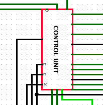
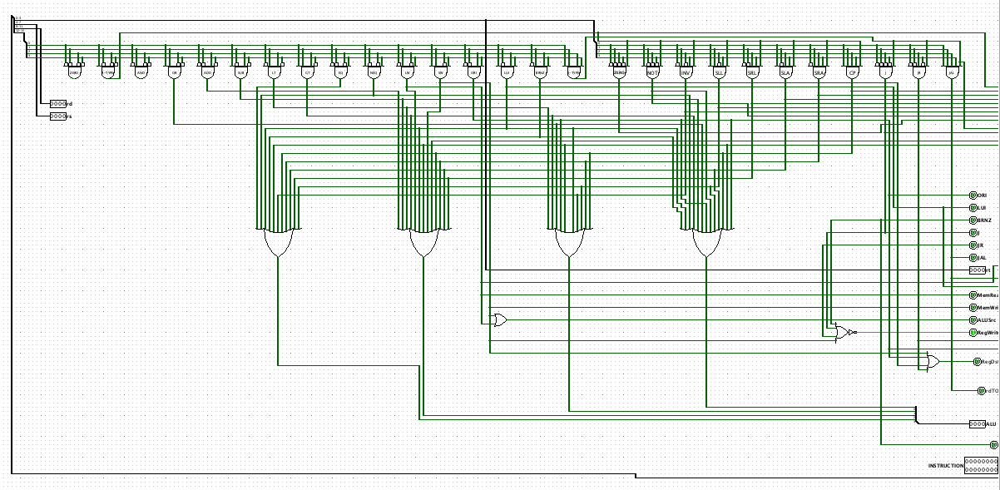
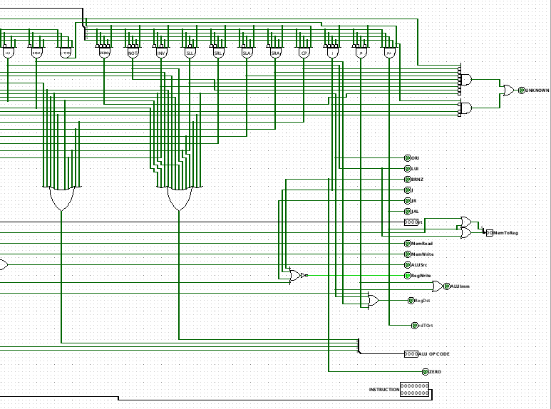
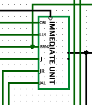
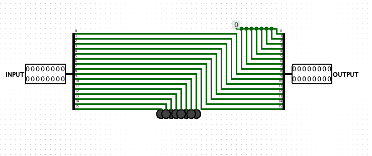
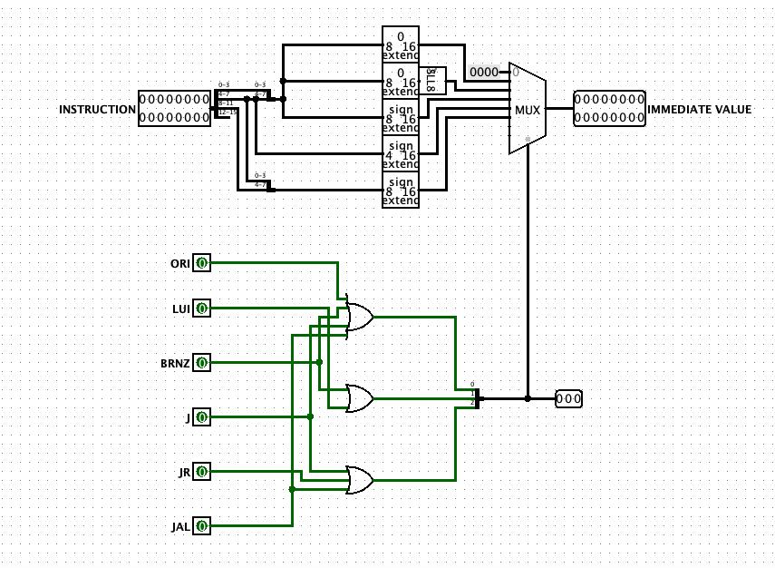
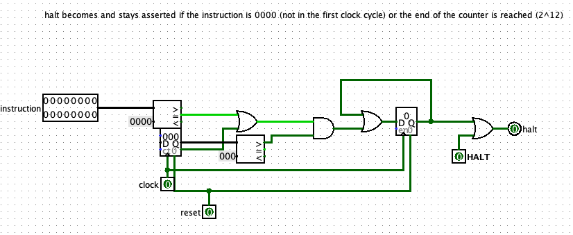
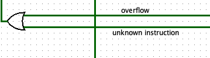
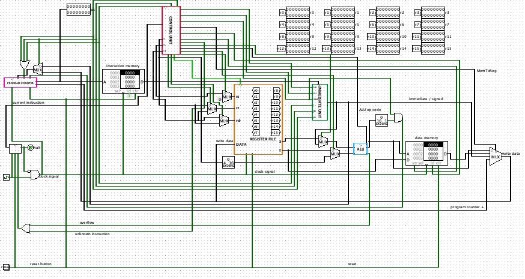

Verslag
Verslag
Titel: Verslag 1, bespreekt datapath, exceptions en programma's
Dit verslag werd opgesteld door:
- Naam: Deputter Pablo
Studentennummer: 20205440
Email adres: Pablo.Deputter@student.uantwerpen.be
- Naam: Etman Max
Studentennummer: 20204398
Email adres: Max.Etman@student.uantwerpen.be
Aantal man-uren besteed: 10 uur
Moeilijkheidsgraad: 5 /10
Inhoud van de oplossing
De oplossing bestaat uit de volgende bestanden (geef alle bestanden op):
Verschillende links:
Verslag 1
Home
Verslag
ALU
Omdat de ALU vorige keer nog niet helemaal werktte hebben we ze nog eens bijgewerkt en nu werkt alles perfect en zijn ook de errors verdwenen wanneer we "Test.py" lieten lopen.
Control Unit
Omdat er enkele nieuwe instructies moesten implementeren werd de vorige Control Unit aangepast en werden ORI, LUI, BRNZ, J, JR en JAL toegevoegd aan de instructieset. De eerste 3 instructies kunnen herkend worden aan de OP code, maar de 3 laatste niet. Als de OP code van de instructie gelijk is aan 1111 zal er gekeken worden naar de rt waarde. Bij ORI staat de ALU code op OR, bij BRNZ op NEQ en bij JR staat deze op ADD.

Ook zijn er enkele outputs bijgekomen, eentje voor elke nieuwe instructie die later wordt doorgevoerd naar de Immediate Unit. Oorspronkelijk bestond de memReg multiplexor uit 2 keuzes, maar dat is nu verandert naar 4: de rechtstreekse output van de ALU, output van het DATA geheugen, output van de Immediate Unit of output van de Programma Counter (=wat eigelijk gewoon de volgende instructie is). Omdat er soms ook bewerkingen met de output van Immediate Unit gedaan moeten worden is er een tweede multiplexor geplaatst die er voor zorgt dat die kan gebeuren, de ALUImm. De ZERO output zorgt er voor dat de rs input van de register file op 0 gezet kan worden a.d.h.v. een multiplexor om zo bij de BRNZ instructie te kunnen vergelijken tussen de r0 register en de register die wordt opegeven in de instructie.
Als er een instructie wordt opgegeven die niet gekend is in de instructieset wordt de output UNKNOWN op 1 gezet. Hieronder enkele screenshots van het circuit. Het kon zeker makkelijk geïmplementeerd worden, maar ik had deze al van de vorige keer dus besloot ik deze simpelweg te "recycleren". Ook enkele zeer onduidelijke "notities" heb ik toegevoegd in de oplossingensectie.


Immediate Unit
Omdat enkele van de nieuwe instructies bestaan uit sign extend, extend, ... besloot ik er een apart circuit voor te maken. Deze krijgt als input de volledige 16-bit instructie en een input over welke instructie het gaat. Als alle inputs op 0 staan wordtde output standaard op 0 gezet.

Bij ORI wordt het geselecteerde deel van de instructie zoals in de opgrave extend naar 16-bit met nullen, bij LUI wordt deze sign extend en nadien 8 keer naar links geshift (=deze heb ik zelf geïmplementeerd), bij BRNZ wordt deze ook sign extend, bij JR worden enkel de 4 bits van de instructie extend naar 16-bits en bij J en JAL worden weer de juiste 8 bits van de instructie extend naar 16-bits. Hieronder zie je screenshots van de SLL 8 en de Immediate Unit.


Exceptions
Al besproken in Control Unit zal de UNKNOWN output op 1 springen als er een instructie wordt ingevoerd die niet gekend is in de instructieset. Deze output komt samen met de OVERFLOW output van de ALU in een OR-gate die aangesloten is met de HALT input van het HALT circuit. Wanneer een van deze 2 dus op 1 staat zal het datapath onmiddelijk op halt springen en bevriest alles.(=Program Counter blijft staan op de huidige instructie en er worden geen instructies meer behandelt/uitgevoerdt) Een geavanceerde manier on exceptions te behandelen zou een coprocessor zijn die alle soort exceptions behandelt. Deze zou ook het PC en de instructie meekrijgen waarop de fout of exception optradt en zou niet onderbroken kunnen worden en dus input vragen aan de gebruiker of programmeur om wat te doen.
Hieronder een screenshot van het halt circuit en de OR-gate.


Full Datapath
Hieronder zie je een screenshot van het Full Datapath met al de units, etc. Zoals je kan zien zijn er heel wat multiplexors bijgekomen voor de enkele nieuwe instructies, deze bestuurd worden door de Control Unit. Alle standaard testen werken perfect en ook de Full Datapath test werkt.

Programma's
Fibonacci getallen
Hieronder zie je het programma gebruikt voor de Fibonacci getallen te berekenen. Wanneer dit werd getest met "Test.py" trad er een infinite loop op, maar wanneer dit manueel werdt geladen in Logisim met de testfile werkt het wel. Het datapath zal op halt springen wanneer het programma het Fibonacci getal 46368 wil berekenen met i-2 = 17711 en i-1 = 28657. Overflow treedt dus op na het getal 28657.
# fibonacci, registers used:
# r1: houdt de index bij van n-2
# r2: houdt de waarde van n-2 bij
# r3: houdt de waarde van n-1 bij
# r4: houdt de index van n-1 bij
# r13: gebruikt om het volgend fibonacci getal in op te slaan.
LOADMEM
zero r1 # 0 laad ZERO in r1.
ori r5 1 # 1 laad het getal 1 in r5, we gaan dit gebruiken om telkens per 1 te verhogen.
ori r2 1 # 2 1 komt in r2 te staan.
lw r1 r0 0 # 3 r1 wordt gebruikt om de index van r2 in het DATA geheugen bij te houden.
sw r2 r1 0 # 4 r2 = n-2
ori r3 1 # 5 1 komt in r3 te staan.
sw r3 r0 1 # 6 r3 = n-1
lw r4 r0 1 # 7 r4 wordt gebruikt om de index van r3 in het DATA geheugen bij te houden.
add r13 r2 r3 # 8 Bereken het nieuwe fibonacci getal --> r13 = ((n-1) + (n-2))
add r4 r4 r5 # 9 Verhoog index van (n-1) met 1.
add r1 r1 r5 # 10 Verhoog index met van (n-2) met 2.
sw r13 r4 0 # 11 Nieuw getal/waarde in uit r13 wordt op vrije plek (n-1) in DATA geheugen gezet.
lw r3 r4 0 # 12 Laad in r3 de nieuwe waarde van (n-1).
lw r2 r1 0 # 13 Laad in r2 de nieuwe waarde van (n-2).
j 8 # 14 Jump terug naar instructie 8, dit blijft uitgevoerdt worden totdat er OVERFLOW optreedt.
# infinite loop wanneer dit via Test.py wordt uitgevoerd.
# Het datapath zal op halt springen wanneer het programma het fibonacci
# getal 46368 wil berekenen met i-2 = 17711 en i-1 = 28657. Overflow treedt
# dus op na het getal 28657.
END
Array Sort
Weeral treedt er een infinite loop op wanneer je het programma probeert te runnen met "Test.py", maar werkt perfect als je het manueel in Logisim uitprobeert. Ik heb het getest door handmatig de getallen in het DATA geheugen te steken en nadien het gegenereerde testfile in het instructie geheugen te stoppen. Zoals verwacht ranschikt het programma de getallen van klein naar groot.
# sort, sorteert DATA geheugen van klein naar groot.
# registers used:
# r13: bevat waarde 1 om makkelijk te index te kunnen verhogen in het DATA geheugen.
# r3: index van het huidige getal.
# r2: waarde van kleinste getal.
# r4: index van kleinste getal.
# r5: waarde van huidig getal.
LOADMEM
zero r1 # 0 laadt waarde ZERO in r1, eerste index in DATA geheugen.
ori r13 1 # 1 laadt waarde 1 in r13 om index te kunnen verhogen.
jal 4 # 2 Jump And Link
j 25 # 3 Jump naar het einde van het programma
cp r3 r1 # 4 r3 bevat index van het huidige getal in het DATA geheugen.
lw r2 r3 0 # 5 laad de waarde op positie r3 uit het DATA geheugen in r2.
cp r4 r1 # 6 r4 bevat index van het kleinste getal.
add r3 r3 r13 # 7 Verhoog index met 1.
lw r5 r3 0 # 8 laad waarde op positie r3 uit DATA geheugen in r5.
eq r10 r5 r0 # 9 check of r5 gelijk is aan 0.
brnz r10 5 # 10 als r5 gelijk is aan 0 branch naar 14.
gt r10 r5 r2 # 11 check of r5 groter is dan r2.
brnz r10 2 # 12 branch naar 13 als r5 groter is dan r3.
cp r2 r5 # 13 kopier waarde van r5 en store deze in r3.
cp r4 r3 # 14 kopieer index van r3 en sla deze op in r4.
j 7 # 15 Jump naar 5
lw r9 r1 0 # 16 laad waarde op index r1 in r9.
sw r2 r1 0 # 17 kleinste getal komt op index r1.
sw r9 r4 0 # 18 getal dat op index r1 staat komt in r9 te staan.
add r1 r1 r13 # 19 index r1 wordt met 1 verhoogd.
lw r2 r1 0 # 20
eq r10 r2 r0 # 21 Als r2 gelijk is aan 0 wordt het programma geïndigdt.
brnz r10 1 # 22
j 4 # 23 Loop programma opnieuw.
jr r15 0 # 24
END
{kind=link}
{kind=link}
{kind=link}
{kind=link}
{kind=link}
{kind=link}
{kind=link}
{kind=link}
{kind=link}
{kind=link}
{kind=link}
{kind=link}